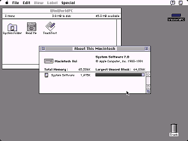
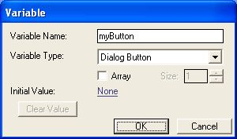

Visual Focus is a cue to indicate for the user which part of the application is currently active. It can be a the window, and it can be a button.
 
Visible focus is an essential aspect of web accessibility that ensures users with visual impairments or motor disabilities can navigate and interact with web content easily. When a user interacts with a web page using the keyboard or a screen reader, the focus is applied to elements such as links, form fields, buttons, etc. This focus is represented by a visual indication, usually a focus ring or outline, around the active element.
By default, most browsers have a built-in focus indicator that outlines the focused element, but the appearance of this focus indicator can vary depending on the browser and operating system, and sometimes it may be difficult to see or even hidden due to custom CSS styles.
To improve accessibility and make the focus indicator clearly visible, it's essential to customize the focus styles using CSS. Here are some best practices to ensure a visible focus:
/* Example of a blue focus ring with thicker outline */
:focus {
outline: 2px solid blue;
}
/* Example of a red focus ring for links */
a:focus {
outline: 2px solid red;
}
/* Example of a green focus ring for buttons */
button:focus {
outline: 2px solid green;
}
Remember that visible focus is not only beneficial for users with disabilities but also for all users, as it provides a clear indication of the current active element. By following these best practices, you can improve the accessibility of your HTML content and create a more inclusive web experience for everyone.